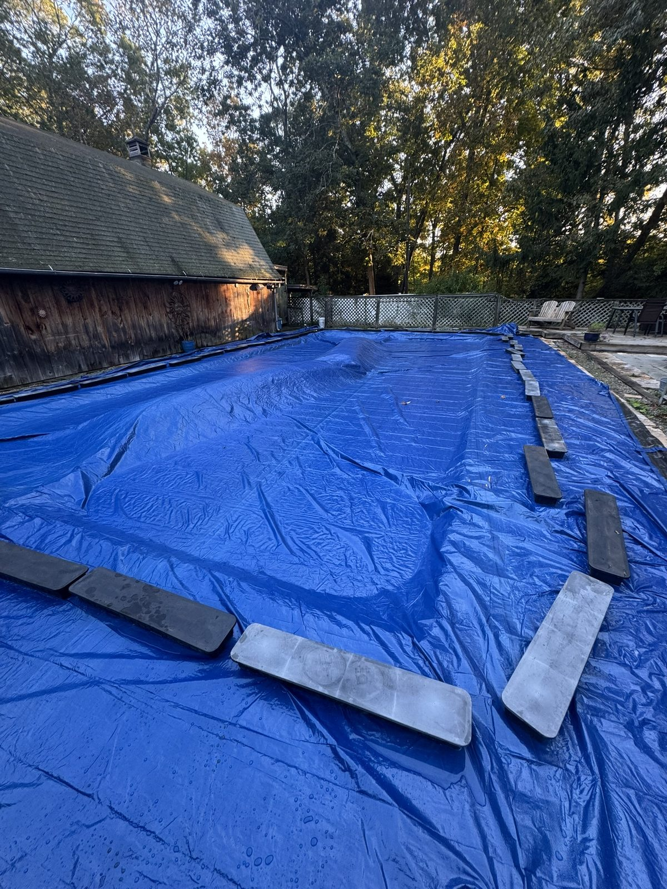

Season 2026

The pool was tested on 113 of the 114 days it was open — 119 titrations in all, the extras being rechecks — and the single untested day was a declared nor'easter. Eight of those days carry no free-chlorine number: six in July while a reagent problem was being chased down, and two more where the reading was deliberately withheld rather than logged as fact. Everything below is computed from the 110 readings that remain.
The pool held its band almost all season. Free chlorine sat at a median of 15.0 ppm against a floor of 10 and an aim of 15, and fell below the floor on 3 of 110 readings. Combined chlorine — the number that tells you something is actually going wrong — read zero on 30% of tests and never once got above 0.8. That is the season in two sentences: nothing ever went wrong, and this log exists to show why rather than to record rescues.
It took 68.0 gallons of 12.5% liquid chlorine across 55 evening doses, plus 251 gallons of well water and whatever the 16.5 inches of rain contributed. No tablets all year, so no cyanuric acid was added to a pool already sitting near 150.
The pool is smaller than it looked. Measuring the real hopper geometry in mid-July cut the working volume from 34,400 gallons to about 31,400 — a 9% overestimate that had been quietly making every dose read weak on paper. A gallon of 12.5% is worth about 3.84 ppm here, not 3.5.
The reagent scare was settled by measurement, not argument. A near-empty DPD container reads low, never high. A paired old-against-new test on 30 September put the error at 3.2 ppm — 76 drops against 92 on the same water. That retired the container and invalidated four days of readings, which are flagged in the log rather than quietly deleted.
Daily chlorine loss is almost weather-independent here. Across 101 mass-balanced days, sun hours explain under 1% of the variance in loss, and rainfall about the same. Water temperature is the only environmental variable with any signal at all, and it is weak. Load class — swimmers, storms, insect waves — was tested properly under cross-validation and lost to a flat average. The honest model for this pool is a constant.
By autumn the signal fell below the noise. With demand near zero in cold water, the day-to-day loss became smaller than the test's own between-reading scatter, which is routinely three drops. Several late-season puzzles dissolved once that was accepted, and 5 days booked a physically impossible negative loss — which is simply what measurement error looks like once the real signal is gone.
The pool mixes. A two-ended test on 4 October read the same at both ends of the open water. The only dead zone ever found is the pocket beside the stairs.
Every evening dose carried a prediction of the next day's noon reading, and every one was scored against what actually turned up. Over 40 scored predictions the average miss was 1.36 ppm, with a signed bias of +1.05 — the model ran slightly pessimistic, over-estimating how much chlorine the pool would lose overnight. Both numbers are on the dashboard, including the days it got it wrong.
The pool went under the cover on 12 October 2026 at about 21.4 ppm of free chlorine, zero combined, and essentially full — an inch and a half of rain two days before closing refilled it after a dry autumn. Nothing in the winter kit adds chlorine, so that final charge is the entire winter sanitiser budget.
Three things are already known about the opening. The first combined-chlorine reading will probably come back at 1.0 or higher, and it will be the winter tablets rather than chloramine — potassium monopersulfate reads as CC on a FAS-DPD test. There will be foam at the returns from the quat algaecide, which is harmless. And the season should start with a fresh FAS titrant: the 2026 bottle had been in service since June, and its age is the one untested explanation left over from the autumn drift work.